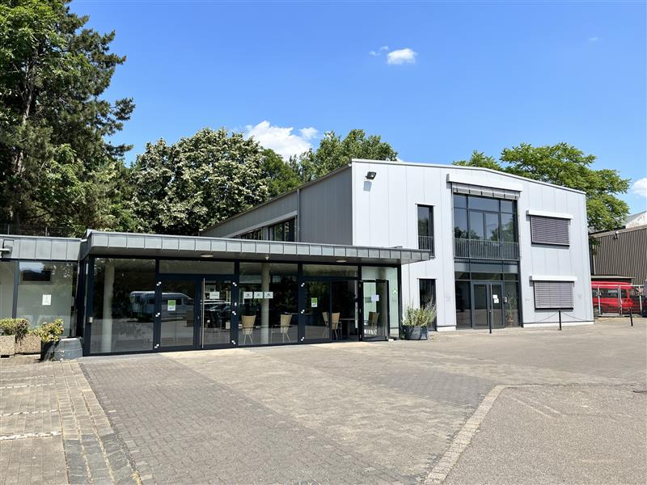

Über uns
Standorte und Zusammenarbeit
Die eva-gGmbH kooperiert in ihren Maßnahmebeauftragungen u. a. mit der Jugendhilfe Köln, dem AWO Kreisverband Köln, mit JobProfil in Trägerschaft der BTZ Berufliche Bildung Köln sowie mit Zug um Zug und IB West.